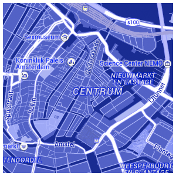

access to employment in Canadian cities

city guesser game

population density + figure ground

global map book

home-campus trips in Toronto

toronto traffic lights

drone strikes in Afghanistan
winnipeg dynamic transit isochrone

unesco heritage sites

olympic cities

blueprint cartography for google maps

rinks, population density, and income

transit stop frequency in Montreal

volcanoes & tectonic plates

Toronto building heights - 2015

Toronto's red light cameras

mapping Harrer's seven years in Tibet